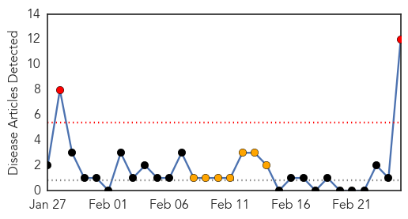

30 Day Trends
Web: 2 alerts, 7 warnings
Twitter: 0 alerts, 0 warnings
Top Articles:
- 1.000
- Saudi Arabia reports two new cases of MERS-CoV
- 0.997
- Deadly Mers virus has been infecting camels for years, Columbia University study shows
- 0.997
- Saudi Arabian Camels Carry MERS Virus
- 0.995
- Saudi camel virus found in humans, killer bug detected in secretions and blood
- 0.995
- Study: MERS-CoV may have been in Saudi camels 22 years ago
- 0.993
- Camel likely source of killer respiratory virus in people: study - Health, Science and Environment
- 0.993
- Camels Likely Source of MERS Virus in People — Naharnet
- 0.992
- Camels likely source of MERS virus in people: study
- 0.988
- Saudi camels infected with MERS or MERS-like virus as early as 1992: study
- 0.980
- MERS Virus That Threatens Humans Also Found in Camels
- 0.944
- MERS coronavirus in 74% of Saudi Arabian camels – The Chart
- 0.844
- DHA and France to collaborate in combating infectious diseases
Top Tweets:
- 0.606
- “@NIAIDNews: NIH study suggests camels have carried MERS-CoV since 1992 & virus may be jumping directly to people http://t.co/TX0Cl4uipv”
Web/News Articles
Tweets

Article Locations